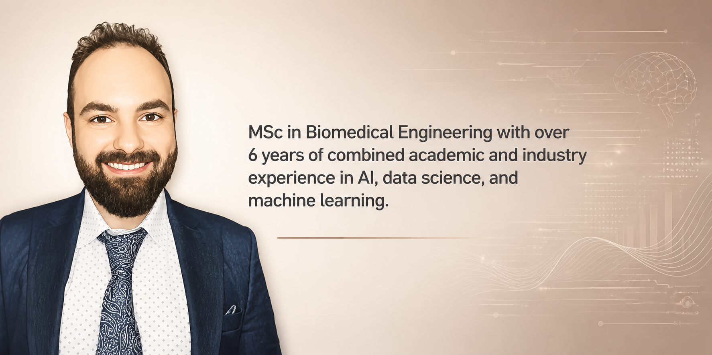
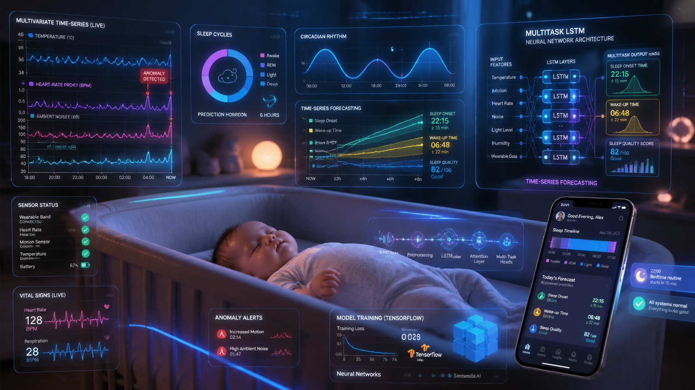
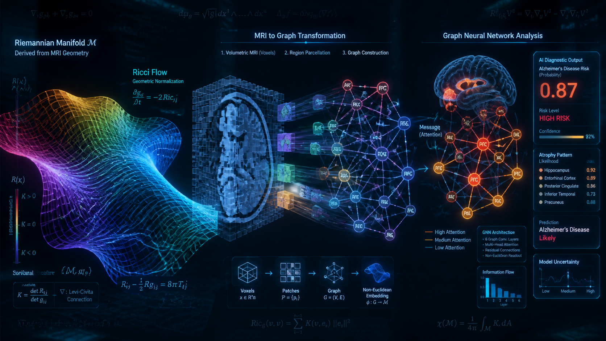
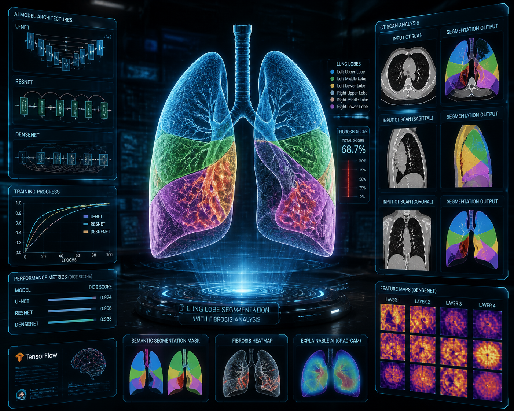
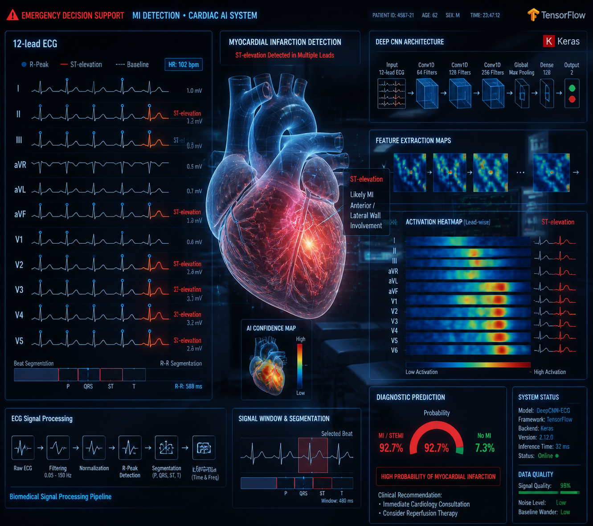
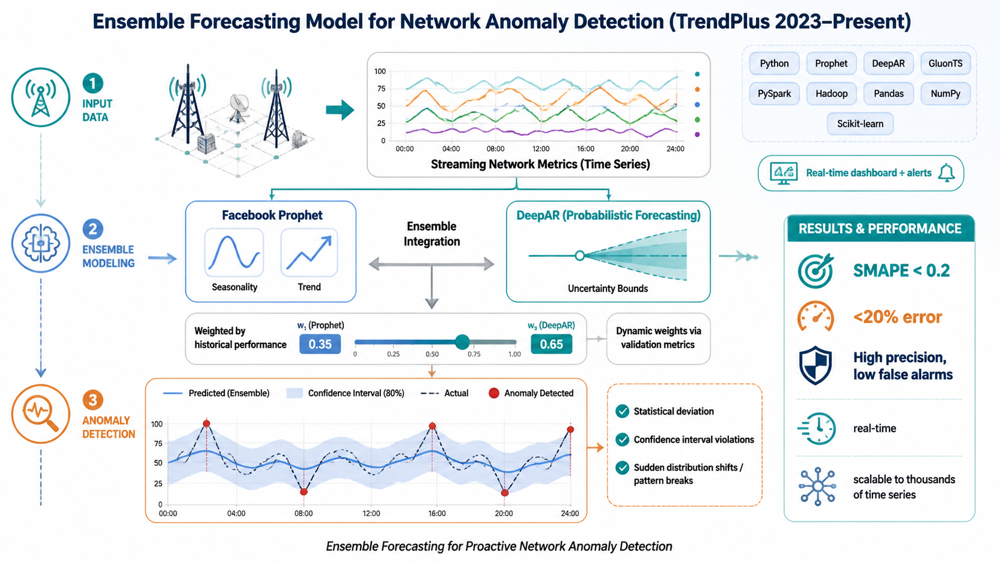
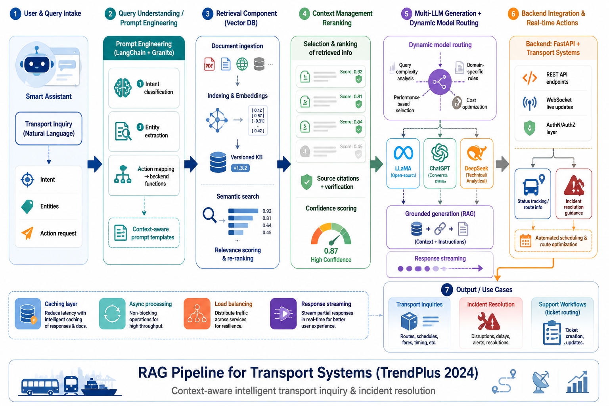

Applied AI Engineer • Data Scientist • Time Series & Operational Intelligence
Building scalable data-driven systems at the intersection of technology and human health

I'm an Applied AI Engineer with an MSc in Biomedical Engineering, working at the intersection of machine learning research, software engineering, and operational AI deployment. Over the past five years, I've worked on data-driven systems across healthcare, telecommunications, logistics, and generative AI — and in every one of those environments, I encountered the same underlying challenge: building an accurate model is only the first step.
The harder work is ensuring a solution stays useful, maintainable, and trusted after it goes into production. My MSc thesis on mortality prediction for heart failure patients taught me that high predictive performance alone is not enough — a model is only valuable if clinicians can understand it, trust it, and incorporate it into real decision-making. That lesson has shaped how I approach AI engineering ever since.
In industry, I've worked on the full lifecycle of data-driven systems: from problem framing and data quality pipelines, to model development, deployment, drift detection, and retraining under changing conditions. This experience gave me a strong interest in dependable AI — systems that remain reliable not just at launch, but over time.
My current areas of focus:
I’m passionate about continuous learning, interdisciplinary collaboration, and building AI technologies that create measurable impact in real-world environments.
GPA: 3.19/4.00
Thesis: Identify Heart Failure Severity Using Data Mining Techniques
Supervisor: Dr. Mansour Vali
GPA: 3.01/4.00
Thesis: Optimizing PID Parameters of Heat Exchanger Controller using Fuzzy Logic
Supervisor: Dr. Ahmad Fakharian
Muscat, Oman
Stockholm, Sweden
Tehran, Iran
Tehran, Iran
K.N. Toosi University of Technology
Oct 2019 – Sep 2022 · Supervisor: Prof. Mansour Vali

TrendPlus Company
Sep 2024
Multitask LSTM-based model to forecast infant sleep patterns and detect anomalies from mobile app data

Amirkabir University of Technology
Feb 2023
Graph-based framework using Ricci Flow and GNNs for Alzheimer's disease classification from 3D brain MRI

K.N. Toosi University
Mar 2019
CT-scan segmentation for fibrosis patients using U-Net, ResNet, and DenseNet architectures

K.N. Toosi University
May 2019
Multi-lead ECG signal analysis using deep CNN for early heart attack detection
Jul 2024 – Present
Designed and delivered project-based courses in AI, Machine Learning, Deep Learning, Statistics, and Python to more than 130 students. Developed hands-on content covering the complete ML lifecycle — data preparation, model development, evaluation, deployment, and MLOps fundamentals. Mentored students through industry-oriented projects; approximately 30% successfully transitioned into AI and data roles at tech companies.
Jun 2022 – Oct 2022
Designed and delivered a comprehensive applied ML and Python course to a class of 40 students. Focused on practical algorithm implementation, feature engineering, model evaluation, and real-world problem solving through project-based learning.
DeepLearning.AI, Coursera (2024)
John Hopkins University, Coursera (2024)
Google, Coursera (2023)
360 Data Science (2023)
DeepLearning.AI, Coursera (2022)
Maktabkhooneh (2022)
2023 30th National and 8th International Iranian Conference on Biomedical Engineering (ICBME)
November 2023, pp. 90-97. IEEE
2023 30th National and 8th International Iranian Conference on Biomedical Engineering (ICBME)
November 2023, pp. 145-149. IEEE
Production AI systems across healthcare, telecommunications, and logistics — built end-to-end from problem framing to deployment

Designed and deployed a large-scale operational intelligence platform monitoring 9,462 time series across 6 telecom domains, 48 technologies, and 130 KPI categories for STC and Singtel. Built the end-to-end pipeline from KPI profiling and seasonality-aware imputation to ensemble forecasting, drift detection, and automated nightly retraining.
MSc thesis project developing deep learning models for short-term mortality prediction in heart failure patients. Designed an Attention-LSTM framework trained on longitudinal clinical records, with a focus on interpretability, imbalanced learning, and clinically meaningful evaluation — resulting in two IEEE conference publications.

Architected and deployed an AI logistics assistant combining LLMs (LLaMA, ChatGPT, DeepSeek), retrieval-augmented generation, and a FastAPI backend to automate customer support, scheduling, and transport inquiry workflows. Focused on retrieval quality, intent routing, and token efficiency in a production environment.
Open to research collaborations, industry AI projects, and conversations about dependable AI systems.